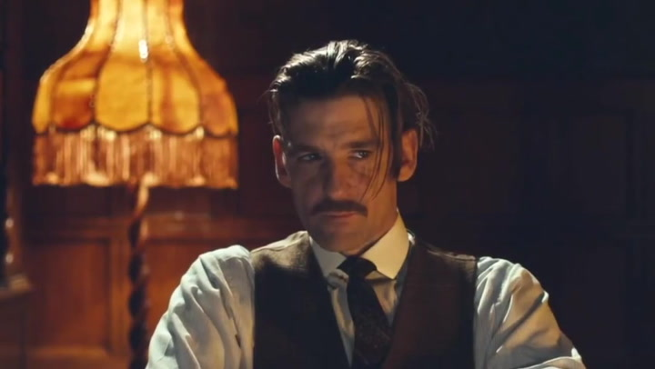

Galvenie varoņi
| Vārds | Uzvārds | Tēls |
|---|---|---|
| Cillian | Murphy | Thomas Shelby |
| Helen | McCrory | Polly Gray |
| Paul | Anderson | Arthur Shelby |
| Sophie | Rundle | Ada Shelby |
| Joe | Cole | John Shelby |
Galvenais varonis, tēls iziet cauri daudz traumatizējošiem pārdzīvojumiem, neskatoties uz visu to viņš spēj paveikt lietas ģeniālā veidā

Tā saucamā ģimenes galva, piekrīt vai noraida kaut kādus lēmumus, zaudēja savus bērnus kad viņiem bija 5 un 3 gadi, un tikai viens ir izdzīvojis kuru viņa meiģina atrast
